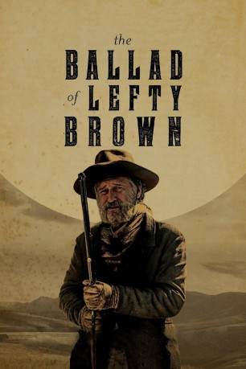

#9034 The Ballad of Lefty Brown
 
 IMDB-Wertung: 6.2 / 10
IMDB-Wertung: 6.2 / 10  Metascore: 64
Metascore: 64 
Lefty Brown (Bill Pullman) ist ein 63-jähriger Handlanger. Treu ergeben, veschroben und selten ernst genommen, ist er seit seiner Jugend die rechte Hand des legendären Cowboys Edward Johnson (Peter Fonda). Doch dann wurde Johnson zum Senator von Montana ernannt und von einem Viehdieb (Joe Anderson) getötet. Von Schuldgefühlen geplagt, macht sich Lefty auf die Suche nach dem Mörder und wenn es das Letzte ist, was er tut. Denn was ist ein Lefty Brown in einer Welt ohne Edward Johnson?
Jahr: 2017
Dauer: 111 Minuten
FSK: 16
Land: USA Studio: A24Tonspuren: DTS - ,
Untertitel: Deutsch,
Auflösung: 1080p (1920x800) Größe: 10342 MB
Genre: Action, Drama, Western
Regisseur: Jared Moshe
Drehbuch: Jared Moshe
Soundtrack: H. Scott Salinas
Darsteller:
 Bill Pullman als Lefty Brown
Bill Pullman als Lefty Brown Peter Fonda als Edward Johnson
Peter Fonda als Edward Johnson- Stephen Alan Seder als Noah DeBow
 Kathy Baker als Laura Johnson
Kathy Baker als Laura Johnson- Joseph Lee Anderson als Oak
 Lewis Pullman als Billy Kitchen
Lewis Pullman als Billy Kitchen Joe Anderson als Frank Baines
Joe Anderson als Frank Baines Tommy Flanagan als Tom Harrah
Tommy Flanagan als Tom Harrah Jim Caviezel als Jimmy Bierce
Jim Caviezel als Jimmy Bierce- Diego Josef als Jeremiah Perkins
- Adam O'Byrne als Thaddeus Crobley
 Michael Spears als Biscuit
Michael Spears als Biscuit- Emily Jones als Red Blake
- Laurent Andruet als Frank
- Lexi Anastasia als Townsperson / Country Girl (uncredited)
- Travis W Bruyer als Cowboy (uncredited)
- Duel Farnes als Virgil (uncredited)
- Karlee Jane als Townsperson (uncredited)
- Tyson Gerhardt als Irish William
- Dillinger Steele als Doc
- Seth Carlin als Tanner
- Tony Hernandez als Bartender
- Nathan McTague als Karl
- Josiah Burdick als Cowboy / Townsperson (uncredited)
- Scott McCauley als Towns Person (uncredited)
- Erik P. Resel als Cowboy (uncredited)
Datei: X:\HD-Western-2000-2015\Ballad of Lefty Brown, The (2017, FSK16, 1920x800).mkv seit 08.06.2018
Festplatte: HD Eastern+Western
 Es gibt insgesamt 61 Filme in der Gruppe 'HD-Western-2000-2015'
Es gibt insgesamt 61 Filme in der Gruppe 'HD-Western-2000-2015'